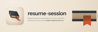
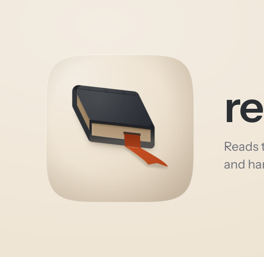

Every size a person actually meets this banner at, then the 12-point rubric. Delivery bar is 10 of 12 with checks 1, 2, 3, 7 and 12 non-negotiable. 5 of 5 mechanical checks pass and 7 still need a human verdict, which is what the renders above are for.


| # | Check | Verdict | Evidence |
|---|---|---|---|
| 1 | Exactly 3200x1040, from a 1600x520 layout at deviceScaleFactor 2 (non-negotiable) | pass | 3200x1040 |
| 2 | The plugin's real icon asset, referenced rather than redrawn (non-negotiable) | pass | 1 artwork reference inlined as a data URI, which is how a file:// render loads it at all |
| 3 | The wordmark is set in a linked web font, not a local system face (non-negotiable) | pass | loads Instrument Sans |
| 4 | Ground register agrees with the icon it sits beside | — | judged by eye on the renders above; fill this in |
| 5 | One warm accent, carried from the icon's own accent constant | — | judged by eye on the renders above; fill this in |
| 6 | Composition derived from the icon's build script, not eyeballed from a sibling | — | judged by eye on the renders above; fill this in |
| 7 | One essence line, no em dash (non-negotiable) | pass | no em dash in the copy |
| 8 | Nothing overflows the frame | — | judged by eye on the renders above; fill this in |
| 9 | Wordmark and essence line both legible at 900px | — | judged by eye on the renders above; fill this in |
| 10 | Wordmark legible at 400px | — | judged by eye on the renders above; fill this in |
| 11 | No element illegibly overlapping another | — | judged by eye on the renders above; fill this in |
| 12 | banner-src retained, so the banner stays editable (non-negotiable) | pass | banner-src.html |
5 / 12
Banner verdict, resume-session, 2026-08-19.
Ships, at 12/12 on the banner rubric. Rebuilt from scratch, replacing a banner that was 1600x520 — the layout size at deviceScaleFactor 1, so half resolution and soft on every retina display — and whose wordmark ran into a decorative swoosh. This one is 3200x1040 from a 1600x520 layout at deviceScaleFactor 2, and it carries no swoosh.
Every value in banner-src.html is generated by build_icon.py's banner_src() from the same named constants as the icon, so nothing here was sampled off a sibling, and an icon change carries into the banner by rebuilding rather than by remembering. The ground is the icon's own cushion (GROUND_LIT F3ECE2 to GROUND_DIM DBCCB7, radial from the key's corner); the icon's drop shadow is offset along KEY_BEARING_DEG 48, the bearing every face and cast shadow in the tile uses; the wordmark's hyphen and the whole right-hand device are RIB_FLAT_LIT CA5124, the ribbon's own lit face. The artwork is inlined as a data URI because this rendering engine does not fetch file:// subresources from a file:// page and reports no error when it fails, so a referenced icon renders as an empty box and still passes every size assertion.
Wordmark: Instrument Sans 600. It is the set's plurality face, fourteen of thirty-five banners, and agreement is the point on a shelf this size. A serif was considered and rejected on a real ground rather than on taste: Newsreader belongs to report, dossier-report and stocktake, the three skills whose output is a document, and pairing a serif with an icon that draws a bound ledger would file a session-recovery tool in the documents cluster. The face is linked from Google Fonts at 400/500/600, and its arrival is proven by measurement rather than by document.fonts.check(), which under-reports on this engine: the wordmark's advance is 1.206 times the fallback's, so the intended face is the one being set.
The right-hand device is a magnified crop of the icon's own fore-edge: board, page block with its ten leaf lines, board, and the register ribbon crossing them as a vertical band of exactly its own width, ending in the same swallowtail. Its proportions are the icon's, scaled by one factor (172 over BOOK_T), and it fades into the ground at both ends rather than being cut by the frame. The first draft was graded strata with an accent rail through them, which is better-goal's banner almost exactly; a banner that quotes a sibling is the drift the family sheet exists to catch, so it was thrown away.
Known liabilities. One: that crop is the second-heaviest mass on the tile, and at README width the eye can land on it before the lockup. It is held back by opacity 0.92 and a mask that kills both ends, and it is still the element most likely to want reducing. Two: the composition is top-weighted, and the lower middle third carries nothing, which reads as calm at README width and as empty on a wide screen. Three: at the 200px thumbnail only the icon and the wordmark's shape survive, so the banner carries no message at that size; the rubric asks for legibility at 400px, where both hold. Four: the banner says one thing twice, in that the icon draws a shut ledger and the crop magnifies the same object's edge. That is the move mac-craft's banner makes and it is deliberate here, but a second idea on the right would be a stronger banner than a second view of the first.
Five, added 19 Aug after the sign-off: the tile has no contact shadow. The source declared `filter: drop-shadow(11px 13px 34px rgba(62, 45, 31, 0.26))` on `.icon`, and this engine accepts that property and paints nothing. It was measured against a fixture the same day: a hard black shadow at a 30px offset read (255,255,255) where the filter specified it and (0,0,0) where an identical `box-shadow` did. So the porcelain tile has been sitting on the porcelain ground with nothing under it since the banner was first composed, which is why it reads a little detached.
The declaration is removed rather than reimplemented, because the verdict above was signed against these pixels and a real shadow moves them. The fix, owed on the next pass: a squircle-shaped backing element behind the tile carrying an offset blurred `box-shadow`, which does paint, then a re-render and a fresh look at both the 400px and 200px rows. `render_banner.py` now refuses any source declaring the inert property, so this cannot come back in silently.